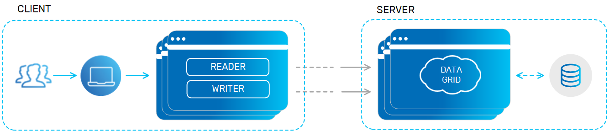
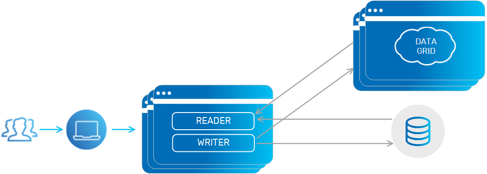
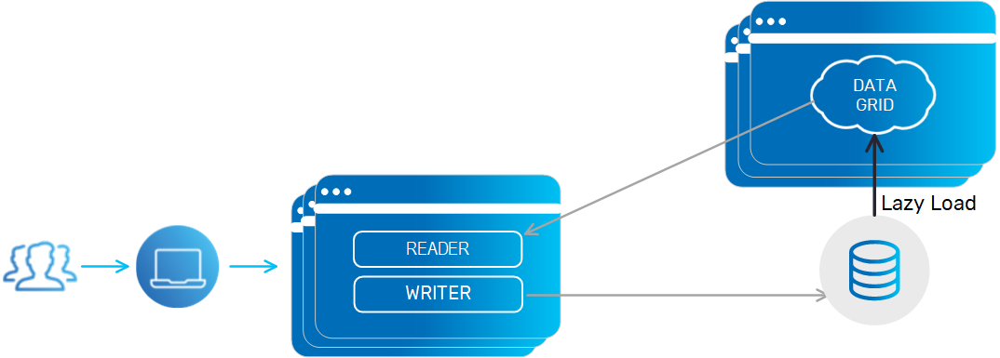
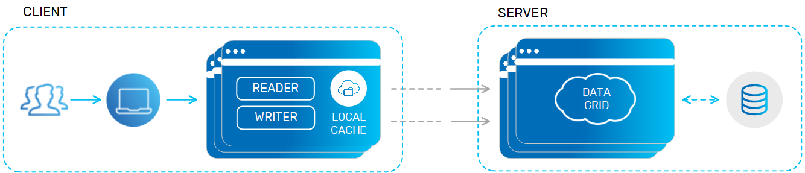
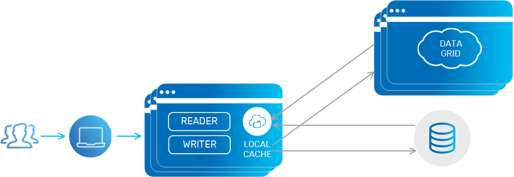
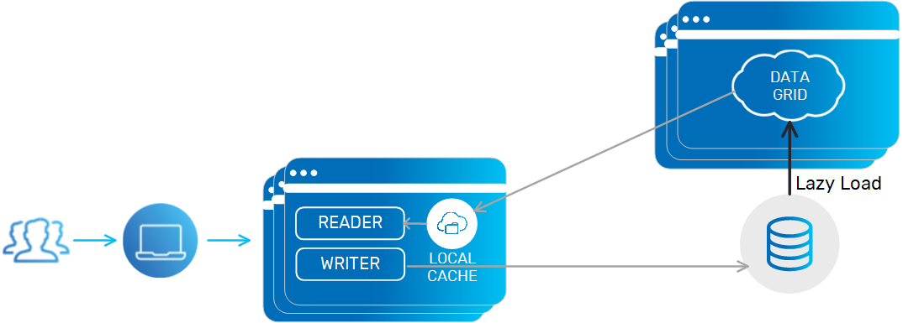
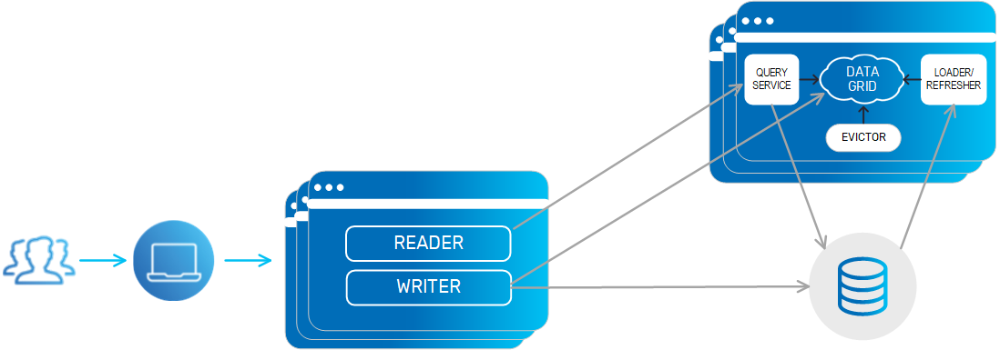
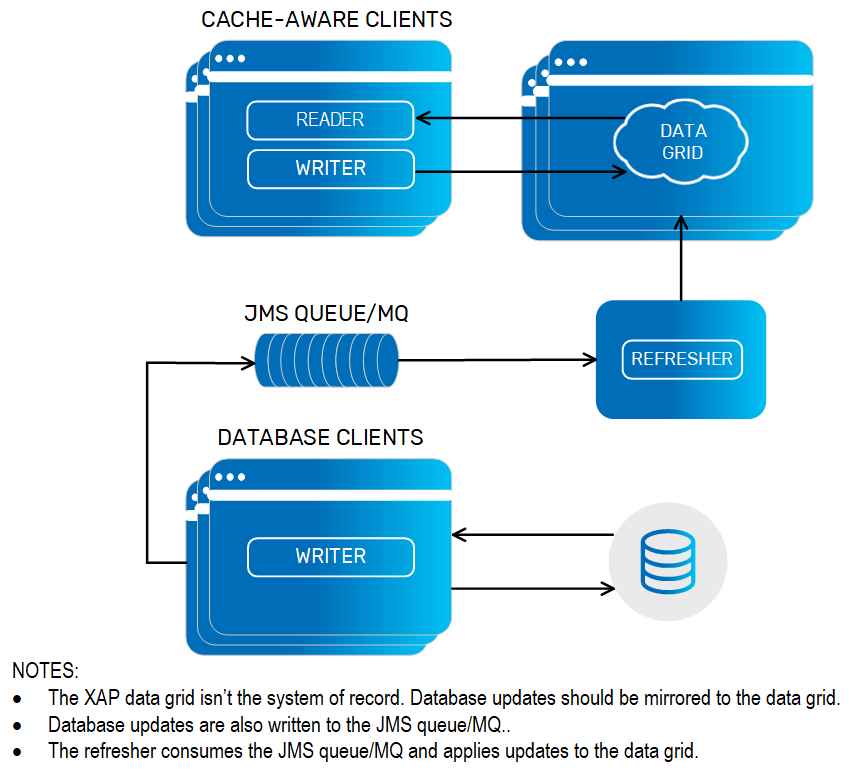
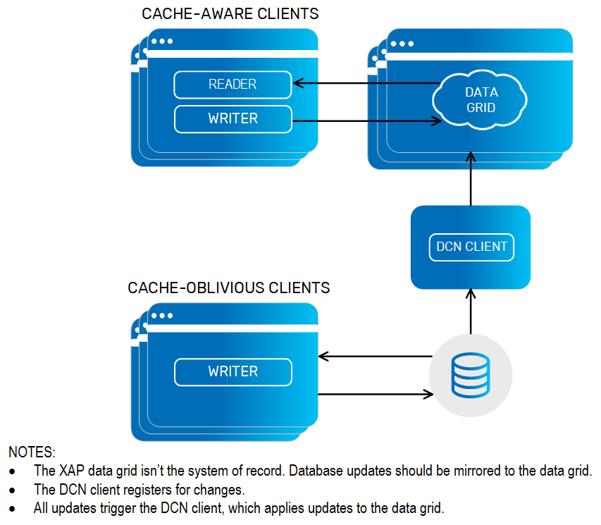

The data grid supports three kinds of caching mechanisms:
Using the data grid as a cache provides you the following benefits:
Low latency: In-Memory Data access time without any disk usage.
Data access layer elasticity: Scale out/up on demand to leverage additional machine resources.
Less load on the database layer: The cache isolates the database from the application to some extent, so less contention is generated at the database layer.
Continuous High-Availability: Zero downtime of your data access layer with the ability to survive system failures without any data loss.
Both the In-line cache and the Side cache support the common deployment topologies: replicated, partitioned and high availability.
With this mechanism, the data grid is the system of record. The database data is loaded into the data grid when it is started. The data grid is responsible for loading the data and pushing updates back into the database. The database can be updated synchronously or asynchronously.
When running in all-in-cache cache policy mode, all data is loaded from the database into the cache when it is started.
When running in LRU cache policy mode, a subset of the data is loaded from the database into the cache when it is started. Data is evicted from the cache based on available memory or a maximum amount of cache objects. Once there is a cache miss, the cache looks for the data within the underlying data-source. If matching data is found, it is loaded into the cache and delivered to the application.

The in-line cache is implemented using the following configurations:
Read-through and Write-through: For persisting the cache data synchronously.
Write-behind - Mirror: For persisting the cache data asynchronously.
Persistence logic can either be the out-of-the-box Hibernate external data source, or any custom persistence logic that implements the Space Persistency extension points.
The in-line cache ensures maximum performance when fetching data where the database is outside the critical path of the application transaction. (This makes more sense than it might seem: database contention is a primary source of application performance failure.)
For best performance, use the ALL-IN-CACHE cache policy with the write-behind mirror. This will ensure maximum hit rate when accessing the cache. With this mode, you should make sure the cache can accommodate all the data you will access.
The in-line cache mechanism is widely used with the following GigaSpaces APIs:
GigaSpace API - GigaSpaces native Object/SQL API.
Map API - GigaSpaces Key/Value (JCache/Hashtable) API.
An in-line cache is very useful when:
The total size of data stored within the database (or any other data source) is equal to or less than the amount of data stored in memory. Ideally, you should use the ALL_IN_CACHE cache policy mode.
The original data model of the data within the database (or any other data source) is similar to the data model of the objects in memory. Space Persistency will work very well; the data will be loaded automatically from the database into the cache, and every change to the data in the cache will be propagated to the database behind the scenes.
With this mechanism, the application is responsible for maintaining the data in the cache:
The application attempts to read an object from the cache.
If the object is found within the cache, the application uses it.
If the object isn't found within the cache, the application fetches it from the database and then the application writes it into the cache. Another option is to turn on the space Data source and allow it to load the data on cache miss in a lazy manner.
The next time the application attempts to fetch the same object, it will be read from the cache (unless the object has been expired, evicted or removed explicitly).
Side Cache without an External Data Source

Side Cache with an External Data Source

With a side cache architecture, there is no mirror. The application is responsible for writing changes to the database. Data is evicted or expired from the space by writing it with a finite lease (TTL). There are two options for loading data into the space:
Running in LRU cache policy mode - having the space configured with an external data source, loading data on cache miss and also via initial load.
Running in ALL_IN_CACHE cache policy mode (you many also have an external data source to enable initial load) - having the application first trying to read from the space. If the application can't find relevant data in the space, then reading from the DB and writing it explicitly to the space, to be used again later.
The side cache scenario is widely used with the following GigaSpaces APIs:
GigaSpace API - GigaSpaces native Object/SQL API.
Map API - GigaSpaces Key/Value (JCache/Hashtable) API.
JDBC API - GigaSpaces native JDBC driver.
memcached API - Using any memcached client (Java , C# , C , C++..). See memcached libraries page for the different programming languages supporting the memcached protocol that may be used with GigaSpaces server memcached implementation.
Hibernate - Leveraging GigaSpaces as Hibernate 2nd Level Cache.
A side cache is very useful when:
The total amount of data stored in the database (or any other data source) is relatively much higher than the amount of data stored in-memory. In this case, you should be running the space in LRU cache policy mode.
The original data model of the data within the database (or any other data source) is very different than the data model of the objects in-memory. In this case, the built-in Space Persistency implementation may not be relevant. A customized mapping logic should be implemented on the client application side to load data from the database and push it into the cache.
Together with the in-line cache and side cache scenarios, you can also use a client cache. This client cache may host data loaded from any data grid partition. The client cache data access does not involve any serialization or network calls.
When using client cache, you use a two-layered cache architecture: The first layer runs locally, within the client, and the second layer runs in the remote data grid. The remote data grid may use any of the supported deployment topologies.
In-Line Cache with a Client Cache

Side Cache with a Client Cache

Side Cache using an External Data Source with a Client Cache

The client cache size is limited to the client process heap size. The client-side cache is updated automatically when the master copy of the object within the data grid is updated. The client cache can be implemented using the following configurations:
Local Cache - On-demand client cache loading data based on client activity. This type of client cache evicts data when the client available memory drops below a configurable value.
Local View - Pre-fetch client cache loading data based on set of SQL queries. This client cache does not evict data. This client cache is designed to be read-only, and supports both queries and reads based on ID.
By default, client cache is not enabled.
Client cache should be used when most of the application activities (above 80%) involve reading data (a read-mostly scenario). When having repeated read activities for the same data (using readById operation), the client cache provides excellent performance boost (up to 100 times faster compared to when a client cache is not used). You should not use client cache if there are relatively large amounts of data updates or removal operations, because the overhead of the client cache updates will affect overall application performance.
When running the cache in LRU cache policy mode, you may need to expire or evict the cache data. This ensures that you don't load the cache with unnecessary data. Another reason to expire or evict the cache data is to ensure that the memory allocated for the cache (JVM heap size) can accommodate the most valuable objects required by your applications.
Here are few options you may use to refresh the cache:
net.jini.core.lease.Lease.cancel() - You can get the Lease object as a result of a write operation for a new object.GigaSpace.write operation for an existing object (update) using a short lease time. See the GigaSpace interface write operation for details.With this approach, data is pushed into the cache in a periodic manner via a timer. The timer fetches relevant data that was recently updated within the database and pushes it into the cache.

Any updates made to the database are also written to a queue. Refresher client consumes the messages on the queue and applies these changes to space.

Oracle and several other databases support Database Change Notifications, where a client can register a listener for changes to data. Any changes made to the database will trigger the listener defined in a DCN Client. The Listener can in turn write these messages into the space.
